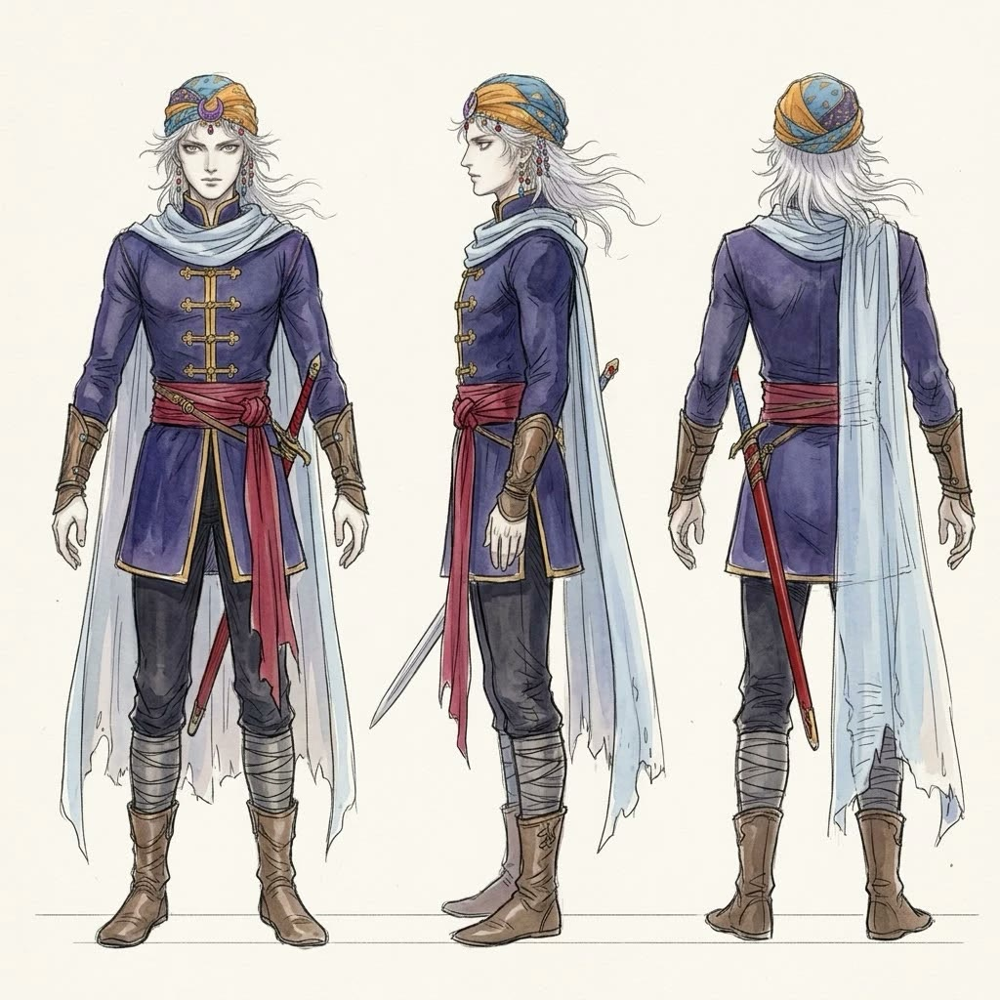
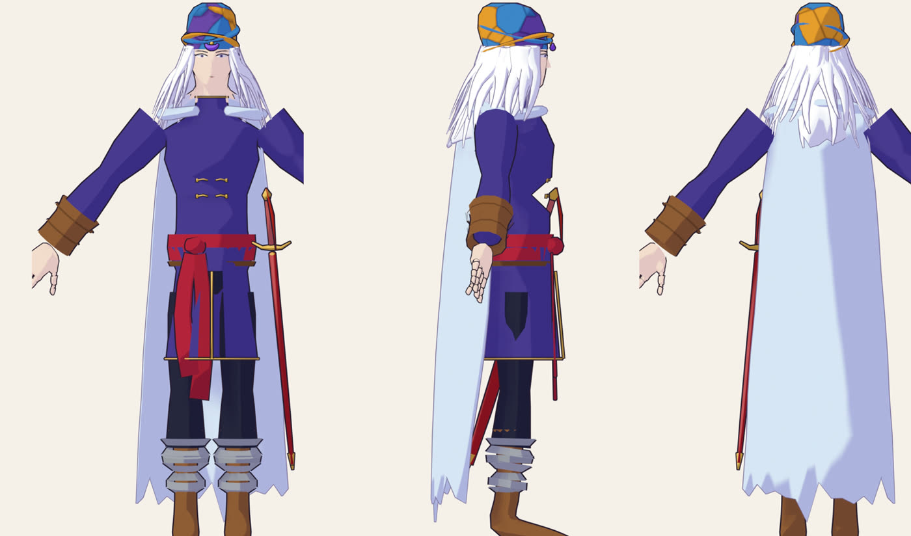
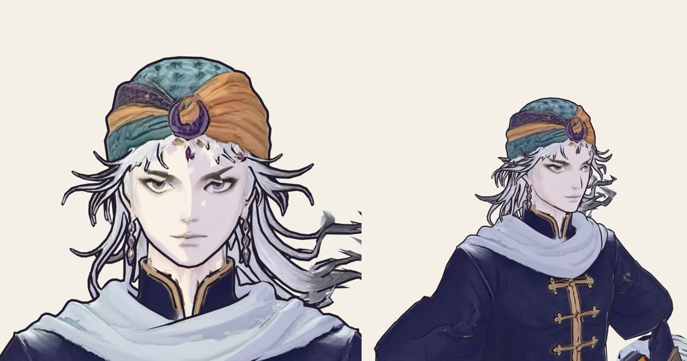
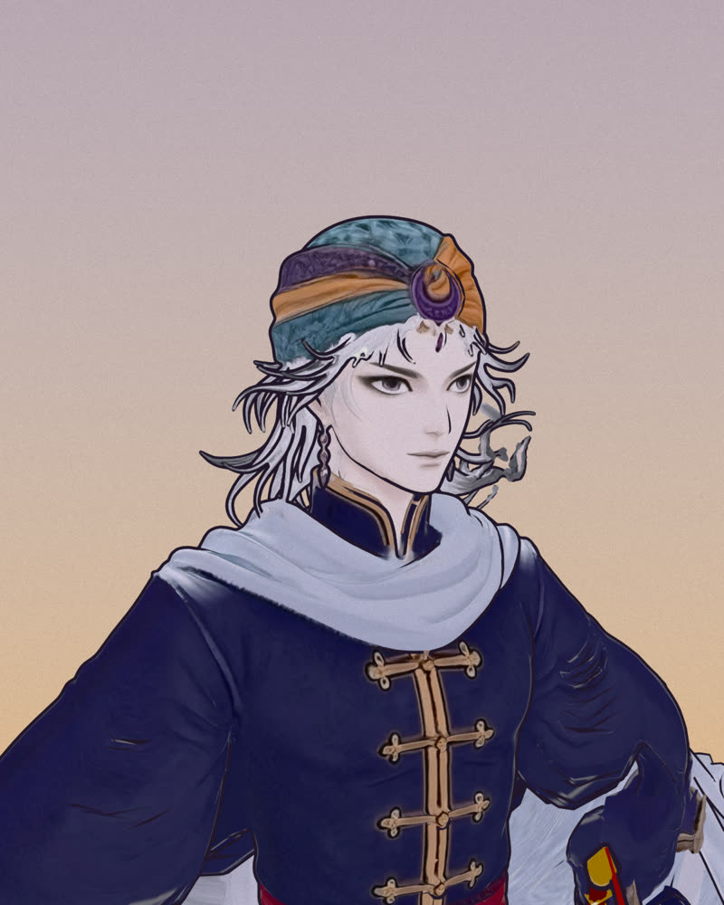

Hollow devlog · Nov 18, 2026
Character Evolution: The Hollow Swordsman
The same character in three stages: the concept sheet, the first model (Nov 17) and the new model (Nov 18).
1. Concept
- A turnaround from the front, side and back on one sheet.
- Indigo high-collared coat with gold frogging, crimson sash, a pale scarf flowing into a torn cape, a patterned head-wrap with a crescent jewel, and silver hair.
- Every later stage takes its palette and costume from this sheet.

2. First model (Nov 17)
- Built entirely by a Python script in Blender. Every garment is simple low-poly geometry.
- Toon shading with lilac shadows and ink outlines, on the game's faceless mannequin.
- Skinned to the game's skeleton, so the game's animations played on it unchanged.

3. New model (Nov 18)
- A shared character standard and toolkit, so every character is built the same way from a short spec: palette, proportions, garments, outlines and which parts hang on spring chains.
- A sculpted base body (Quaternius Universal Base Characters) with a real face, hands and eyes, fitted onto the game's skeleton.
- The model itself is generated from the concept with an image-to-3D tool, then fitted onto the game skeleton automatically. The mesh was reduced from 1.15 million to 60,000 triangles.
- Skin weights are taken from the base body. Loose cloth and hair hang from the trunk, never an arm.
- 19 spring chains (7 hair, 7 cape, 5 coat skirt), for 117 bones in total. The 65 game bones are unchanged, so every game clip and film move still fits exactly.

